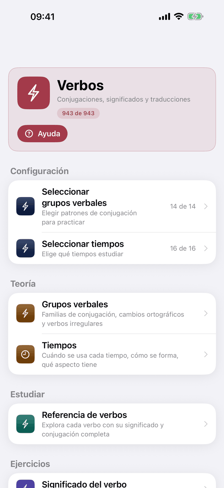
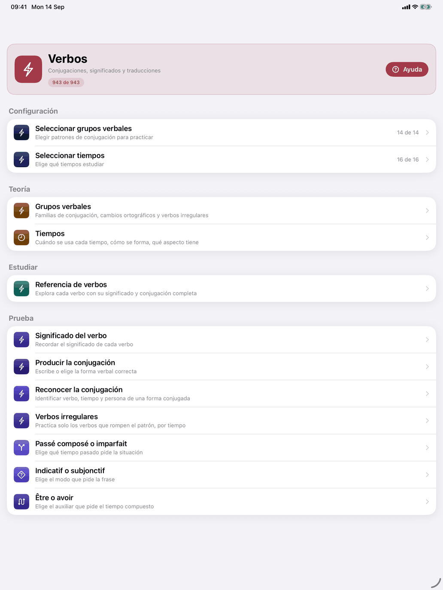
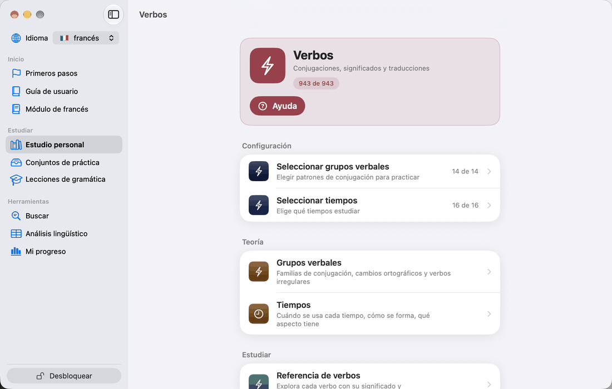

Verbos



Abre Estudio personal → Verbos para llegar a la sección de verbos. La tarjeta de arriba dice «Conjugaciones, significados y traducciones» y muestra cuántos verbos te da tu selección actual del total del catálogo. Su botón Ayuda explica la sección. Una pulsación larga en una fila (en el Mac, mantén pulsado) explica esa fila.
Si tus grupos verbales seleccionan verbos pero tu nivel y tus temas los eliminan todos, aparece un aviso al principio de Práctica: «Ningún verbo coincide una vez aplicado el ámbito de temas.» Amplía tus temas o quita el filtro de temas para recuperar los verbos.
La sección tiene cuatro apartados.
Teoría
- Grupos verbales — en qué se diferencian los tres grupos franceses, una tarjeta para cada grupo verbal, las familias de compuestos y cómo marcan las tablas de conjugación las formas irregulares, y Patrones regulares para imprimir. Consulta Grupos verbales.
- Tiempos — cuándo se usa cada tiempo, cómo se forma y qué aspecto tiene. Consulta Tiempos.
Estudiar
- Referencia (Referencia de verbos) — todos los verbos de tu selección con su traducción. Toca un verbo para ver su conjugación completa, su uso y su estructura. Consulta Referencia de verbos y Tablas de conjugación.
Práctica
- Seleccionar grupos (Seleccionar grupos verbales) — elige los patrones de conjugación que quieres practicar y, con ellos, los verbos de tu conjunto. La etiqueta indica cuántos de los grupos de tu nivel están marcados, p. ej. «14 de 14», y se vuelve roja si no hay ninguno. Consulta Seleccionar grupos verbales.
- Seleccionar tiempos — elige cuáles de los tiempos de tu nivel quieres estudiar, p. ej. «16 de 16». Consulta Seleccionar tiempos.
Los grupos y tiempos por encima de tu nivel no se ofrecen, así que en un nivel bajo estas cifras son menores.
- Significado (Significado del verbo)
- Producir la conjugación
- Reconocer la conjugación
- Passé composé o imparfait
- Indicatif o subjonctif
- Être o avoir
Cada ejercicio tiene su propio apartado en esta guía.
El estudio de los verbos se hace en tres pasos
- Elige qué estudiar. En Seleccionar grupos, marca los patrones que quieras. En Seleccionar tiempos, limítate a los tiempos que estés aprendiendo: las tablas de conjugación y los ejercicios mostrarán solo esos. Tu nivel se elige en Esquema y nivel (toca la bandera) y los temas en Estudio personal → Seleccionar ámbito de palabras; pon tu nivel en A1 para empezar por los verbos más frecuentes.
- Estudia. Lee Grupos verbales y Tiempos en Teoría, y luego abre verbos en Referencia para ver sus tablas antes de practicarlos.
- Practica. Calienta con Significado para saber qué significan los verbos y pasa después a Producir la conjugación y Reconocer la conjugación. Añade los tiempos de uno en uno, a medida que cada uno se asienta; imparfait y passé composé son los más útiles después de présent. Para las formas que rompen el patrón, consulta Irregularidad por tiempo verbal; usa los ejercicios de elección cuando domines las formas.
Los tres grupos verbales
Todo verbo francés pertenece a uno de tres grupos, según su infinitivo y su forma de conjugarse.
- 1.er grupo — -er (parler, aimer, travailler) — con diferencia el grupo más grande y más regular. Aller parece pertenecer a él, pero es del 3.er grupo.
- 2.º grupo — -ir con el infijo -iss- (finir, choisir, réussir) — verbos regulares en -ir que añaden -iss- en el plural del presente y en todo el imperfecto (nous finissons, je finissais).
- 3.er grupo — todo lo demás (aller, faire, prendre, venir, pouvoir, vouloir, devoir, voir) — los verbos en -re y en -oir y los verbos en -ir que no llevan -iss-. Muchos siguen un patrón propio; aquí es donde está casi todo el trabajo de memoria.
Los tres grupos solo tienen terminaciones distintas en dos tiempos, el présent y el passé simple. En el imparfait, el futur simple y el conditionnel présent, los tres llevan las mismas terminaciones.
Los tiempos compuestos (passé composé, plus-que-parfait, …) se forman con un auxiliar: avoir en la mayoría de los verbos, y être en una lista corta de verbos de movimiento y cambio de estado (aller, venir, arriver, partir, naître, mourir, devenir, …) y en todos los verbos pronominales. Algunos verbos, como monter, descendre, sortir y passer, llevan avoir cuando tienen objeto directo. Con être, el participio pasado concuerda con el sujeto.
El código de colores de la conjugación (francés)
Las tablas de conjugación marcan cada forma para que veas dónde se aparta un verbo del patrón de su grupo, y cuánto. El francés usa las mismas tres marcas que los demás cursos, y cada marca significa una sola cosa.
Subrayado — la terminación regular. La terminación aparece subrayada cuando es la que predice el patrón: parlons. También aparece en formas irregulares, porque la mayoría de las formas irregulares solo lo son en la raíz.
Rojo en parte de una forma — algo ha cambiado. Solo la parte que se aparta está en rojo, y una terminación regular sigue subrayada. Por ejemplo:
- Cambios de raíz y ajustes ortográficos: en acheter, el presente j'achète tiene la è en rojo, mientras que nous achetons no tiene nada en rojo porque su raíz no cambia. Manger → nous mangeons y commencer → nous commençons muestran en rojo la letra ajustada.
- Raíces irregulares de futuro: faire → je ferai tiene la e en rojo, y la terminación -ai subrayada.
- Présent del grupo 3: solo está en rojo la parte de la raíz que cambia. Pouvoir → nous pouvons no tiene nada en rojo: pouv- es la raíz que da el infinitivo, y -ons está subrayada.
- Raíces fuertes del passé simple: la raíz está en rojo y la terminación subrayada, como en boire → je bus.
Rojo en toda la forma — completamente irregular. La forma no tiene relación sistemática con el patrón y hay que aprenderla entera: el présent de être (je suis, nous sommes), avoir (ils ont) y aller (je vais, ils vont).
Tiempos compuestos. El auxiliar nunca se marca; la marca la lleva el participio pasado. Un participio irregular como pris, mis u ouvert aparece en rojo en todos los tiempos compuestos. Uno regular (parlé, fini, entendu) tiene su última letra subrayada.
Azul marca, en los demás cursos, una terminación de un segundo juego de terminaciones. El francés tiene un solo juego por grupo, así que el azul nunca aparece en las tablas francesas.